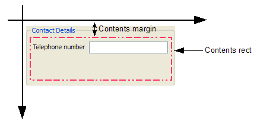

| Home · All Classes · Modules · QSS HELP · QSS 案例 · VER007 HOME |
该QGraphicsProxyWidget类提供了一个代理层嵌入QWidget在QGraphicsScene。More...
该QGraphicsProxyWidget类提供了一个代理层嵌入QWidget在QGraphicsScene。
QGraphicsProxyWidget嵌入式播放器QWidget基于窗口小部件，例如，一个QPushButton，QFontComboBox或什至QFileDialog，成QGraphicsScene。转发两个对象之间的事件之间转换QWidget的整数为基础的几何形状和QGraphicsWidget的QREAL为基础的几何形状。 QGraphicsProxyWidget支持的所有核心功能QWidget包括标籤焦点，键盘输入，拖放，和弹出窗口。您还可以嵌入复杂的部件，例如，小部件与subwidgets 。
例如：
int main(int argc, char **argv) { QApplication app(argc, argv); QTabWidget *tabWidget = new QTabWidget; QGraphicsScene scene; QGraphicsProxyWidget *proxy = scene.addWidget(tabWidget); QGraphicsView view(&scene); view.show(); return app.exec(); }
QGraphicsProxyWidget需要通过创建为每个弹出一个子代理自动弹出嵌入嵌入部件的孩子照顾。这意味着，当一个嵌入式QComboBox显示其弹出的列表中，一个新的QGraphicsProxyWidget会自动创建，嵌入弹出，正确定位它。这只有在弹出是嵌入式控件的子工程（例如QToolButton.setMenu（ ）要求QMenu实例是孩子QToolButton） 。
有两种方式来嵌入使用QGraphicsProxyWidget一个小部件。最常见的方法是将一个部件指针传递给QGraphicsScene.addWidget（ ）连同任何相关Qt.WindowFlags。这个函数返回一个指针，指向一个QGraphicsProxyWidget 。然后，您可以选择reparent或位置无论是代理，或嵌入部件本身。
例如，下面的代码片段中，我们嵌入一个组框入代理：
QGroupBox *groupBox = new QGroupBox("Contact Details"); QLabel *numberLabel = new QLabel("Telephone number"); QLineEdit *numberEdit = new QLineEdit; QFormLayout *layout = new QFormLayout; layout->addRow(numberLabel, numberEdit); groupBox->setLayout(layout); QGraphicsScene scene; QGraphicsProxyWidget *proxy = scene.addWidget(groupBox); QGraphicsView view(&scene); view.show();
下面的图片是其内容利润率和内容获得RECT标记输出。

或者，您也可以通过创建一个新的QGraphicsProxyWidget项目开始，然后调用setWidget（ ）嵌入QWidget后来。该widget（ ）函数返回一个指向嵌入部件。 QGraphicsProxyWidget股份拥有权QWidget，所以如果两个部件被破坏，其他部件将被自动销毁。
QGraphicsProxyWidget保持其状态与嵌入式部件同步。例如，如果代理是隐藏或禁用，嵌入式部件将被隐藏或禁用为好，反之亦然。当插件被嵌入通过调用addWidget （） ， QGraphicsProxyWidget副本从窗口小部件的状态到代理，并在这之后，两个将保持同步，其中可能的。默认情况下，当你嵌入一个widget到一个代理，无论是部件和代理将是可见的，因为一QGraphicsWidget创建时是可见的（你不必调用show（））。如果你明确地隐藏嵌入部件，代理也将成为无形的。
例如：
QGraphicsScene scene; QLineEdit *edit = new QLineEdit; QGraphicsProxyWidget *proxy = scene.addWidget(edit); edit->isVisible(); // returns true proxy->isVisible(); // also returns true edit->hide(); edit->isVisible(); // returns false proxy->isVisible(); // also returns false
QGraphicsProxyWidget保持对称性以下国家：
| QWidget state | QGraphicsProxyWidget state | Notes |
|---|---|---|
| QWidget.enabled | QGraphicsProxyWidget.enabled | |
| QWidget.visible | QGraphicsProxyWidget.visible | The explicit state is also symmetric. |
| QWidget.geometry | QGraphicsProxyWidget.geometry | Geometry is only guaranteed to be symmetric while the embedded widget is visible. |
| QWidget.layoutDirection | QGraphicsProxyWidget.layoutDirection | |
| QWidget.style | QGraphicsProxyWidget.style | |
| QWidget.palette | QGraphicsProxyWidget.palette | |
| QWidget.font | QGraphicsProxyWidget.font | |
| QWidget.cursor | QGraphicsProxyWidget.cursor | The embedded widget overrides the proxy widget cursor. The proxy cursor changes depending on which embedded subwidget is currently under the mouse. |
| QWidget.sizeHint() | QGraphicsProxyWidget.sizeHint() | All size hint functionality from the embedded widget is forwarded by the proxy. |
| QWidget.getContentsMargins() | QGraphicsProxyWidget.getContentsMargins() | Updated once by setWidget(). |
| QWidget.windowTitle | QGraphicsProxyWidget.windowTitle | Updated once by setWidget(). |
Note: QGraphicsScene保存在一个特殊的状态，防止它干扰其他部件（包括嵌入式和不嵌入），而小部件嵌入嵌入部件。在这种状态下，小部件可以略微在从行为时，它不是嵌入不同。
Warning:该类提供了方便，当桥接QWidgets和QGraphicsItems ，它不应该被用于高性能的场景。
该parent的说法，如果不是没有，原因self通过Qt的，而不是PyQt的拥有。
构造一个新的QGraphicsProxy部件。parent和wFlags被传递到QGraphicsItem的构造。
从重新实现QGraphicsItem.contextMenuEvent（ ） 。
创建一个代理部件给定的child包含在这个代理的小工具。
此功能使得它可以获取代理非顶层窗口部件。例如，你可以嵌入一个对话框，然后只是它的小部件一个转换。
如果部件已经嵌入，返回现有的代理部件。
此功能被引入Qt的4.5 。
See also newProxyWidget（）和QGraphicsScene.addWidget（ ） 。
从重新实现QGraphicsItem.dragEnterEvent（ ） 。
从重新实现QGraphicsItem.dragLeaveEvent（ ） 。
从重新实现QGraphicsItem.dragMoveEvent（ ） 。
从重新实现QGraphicsItem.dropEvent（ ） 。
从重新实现QObject.event（ ） 。
从重新实现QObject.eventFilter（ ） 。
从重新实现QGraphicsItem.focusInEvent（ ） 。
从重新实现QGraphicsWidget.focusNextPrevChild（ ） 。
从重新实现QGraphicsItem.focusOutEvent（ ） 。
从重新实现QGraphicsWidget.grabMouseEvent（ ） 。
从重新实现QGraphicsWidget.hideEvent（ ） 。
从重新实现QGraphicsItem.hoverEnterEvent（ ） 。
从重新实现QGraphicsItem.hoverLeaveEvent（ ） 。
从重新实现QGraphicsItem.hoverMoveEvent（ ） 。
从重新实现QGraphicsItem.itemChange（ ） 。
从重新实现QGraphicsItem.keyPressEvent（ ） 。
从重新实现QGraphicsItem.keyReleaseEvent（ ） 。
从重新实现QGraphicsItem.mouseDoubleClickEvent（ ） 。
从重新实现QGraphicsItem.mouseMoveEvent（ ） 。
从重新实现QGraphicsItem.mousePressEvent（ ） 。
从重新实现QGraphicsItem.mouseReleaseEvent（ ） 。
创建一个代理部件给定的child包含在这个代理的小工具。
你不应该直接调用此函数;使用QGraphicsProxyWidget.createProxyForChildWidget（ ）来代替。
此功能是假的虚拟插槽，你可以在你的子类重新实现，以控制如何将新的代理部件被创建。默认实现返回与创建一个代理QGraphicsProxyWidget（ ）构造函数与此代理插件作为父。
此功能被引入Qt的4.5 。
See also createProxyForChildWidget（ ） 。
从重新实现QGraphicsItem.paint（ ） 。
从重新实现QGraphicsWidget.resizeEvent（ ） 。
从重新实现QGraphicsLayoutItem.setGeometry（ ） 。
该widget说法有它的所有权转移给Qt的。
Embeds widget这个代理部件。嵌入式构件必须完全位于内部或图形视图之外。你不能嵌入一个小部件，只要它是在UI别处可见，在相同的时间。
widget必须是一个顶级窗口部件，其母公司为0 。
当小部件是嵌入式的，它的状态（例如，可见，启用，几何形状，大小的提示）复制到代理服务器控件。如果嵌入式部件被明确隐藏或禁用，代理部件将成为明确地隐藏或禁用嵌入完成后。类文档有一个完整的概述共享状态。
QGraphicsProxyWidget的窗口标志确定是否小部件，嵌入后，将获得的窗口装饰与否。
在此之后函数返回，QGraphicsProxyWidget将保持其状态与同步widget只要有可能。
如果一个部件已经嵌入了这个代理，当这个函数被调用，即部件将首先自动未嵌入。传递0的widget争吵只会解除嵌入的控件，和当前嵌入式部件的所有权将被传递给调用者。嵌入每个子部件也将被嵌入和他们的代理部件损坏。
需要注意的是小部件与Qt.WA_PaintOnScreen部件属性集和部件的包装外部应用程序或控制器无法嵌入。例子是QGLWidget和QAxWidget。
See also widget（ ） 。
从重新实现QGraphicsWidget.showEvent（ ） 。
从重新实现QGraphicsLayoutItem.sizeHint（ ） 。
返回矩形widget，它必须是一个后裔widget（） ，或widget（ ）本身，这个代理项目的本地坐标。
如果没有部件被嵌入widget为0，或widget是不是嵌入部件的后裔，这个函数返回一个空QRectF。
See also widget（ ） 。
从重新实现QGraphicsItem.type（ ） 。
从重新实现QGraphicsWidget.ungrabMouseEvent（ ） 。
从重新实现QGraphicsItem.wheelEvent（ ） 。
返回一个指向嵌入的部件。
See also setWidget（ ） 。
| PyQt 4.10.3 for X11 | Copyright © Riverbank Computing Ltd and Nokia 2012 | Qt 4.8.5 |